#Load libraries
library(phyloseq)
library(ape)
library(qiime2R)
library(hilldiv)
library(tidyverse)
library(ggpubr)
library(ggplot2)
library(cowplot)
library(vegan)
library(emmeans)
library(multcomp)
library(lme4)
library(lmerTest)
library(easystats)Alpha Diversity
Load libraries and prepare data
#load data
ps <- readRDS("rds/interior_impaired/physeq.rds")# Extract data from phyloseq object
#library(phyloseq)
otu_table <- otu_table(ps, taxa_are_rows = TRUE)
metadata <- as(sample_data(ps), "data.frame")#Mangrove system colors
loc_colors <- c("Fossil Lagoon"= "#A7fcc1",
"San Pedro River" = "#26B170",
"Impaired Términos Lagoon" = "gray40")
#Mangrove type colors
mt_colors <- c("Interior"= "#A7fcc1",
"Coastal" = "#329D9C")
#Depth colors
depth_colors <- c("Surface" = "#f5e5c4",
"Mid" = "#baa179",
"Deep" = "#80673b")01. Get Hill numbers
# library(hilldiv)
# library(tidyverse)
# Get hill numbers
q0 <- hill_div(otu_table, qvalue = 0)
q1 <- hill_div(otu_table, qvalue = 1)
q2 <- hill_div(otu_table, qvalue = 2)# Merge metadata with Hill numbers
q012_all <- cbind(q0, q1, q2) %>% as.data.frame() %>% rownames_to_column(var = "SampleID")
metadata_with_hill <- q012_all %>%
inner_join(metadata, by = c("SampleID"="SampleID"))
#save table
write.table(metadata_with_hill, "Tables/interior_impaired/Metadata_with_hill.tsv", quote = FALSE, sep = "\t", row.names = TRUE, col.names=TRUE)
# show
metadata_with_hill %>% head() SampleID q0 q1 q2 Collection_date depth ID Environmental_medium
1 S1A015 1266 330 106 2023-09-28 0-15 S1A sediment
2 S1A1530 1527 434 165 2023-09-28 16-30 S1A sediment
3 S1A3050 1558 428 162 2023-09-28 31-45 S1A sediment
4 S1A5075 1632 363 111 2023-09-28 50-70 S1A sediment
5 S1B07 1502 164 36 2023-09-28 0-15 S1B sediment
6 S1B2230 1821 461 150 2023-09-28 16-30 S1B sediment
Geographic.Location Study_zone Ecological_type season Mangrove_system
1 Mexico:Tabasco Rio San Pedro Fringe flood San Pedro River
2 Mexico:Tabasco Rio San Pedro Fringe flood San Pedro River
3 Mexico:Tabasco Rio San Pedro Fringe flood San Pedro River
4 Mexico:Tabasco Rio San Pedro Fringe flood San Pedro River
5 Mexico:Tabasco Rio San Pedro Fringe flood San Pedro River
6 Mexico:Tabasco Rio San Pedro Fringe flood San Pedro River
Mangrove_type Depths
1 Interior Surface
2 Interior Mid
3 Interior Deep
4 Interior Deep
5 Interior Surface
6 Interior Mid02. Get Hill means
# Reorder q values
meta_qs <- metadata_with_hill %>%
pivot_longer(cols = q0:q2, names_to = "q", values_to = "value") %>%
filter(q %in% c("q0", "q1", "q2")) %>%
mutate(
qs = case_when(
q == "q0" ~ "q0=Observed",
q == "q1" ~ "q1=Exp Shannon",
q == "q2" ~ "q2=Inv Simpson"))
#Get means of Hill numbers
means <- meta_qs %>% group_by(Depths, Mangrove_system, Mangrove_type, qs) %>%
summarise(means = mean(value, na.rm = TRUE),
sd = sd(value, na.rm = TRUE),
.groups = 'drop')
#save table
write.table(means, "Tables/interior_impaired/Hill_means_sd.tsv", quote = FALSE, sep = "\t", row.names = TRUE, col.names=TRUE)
print(means)# A tibble: 27 × 6
Depths Mangrove_system Mangrove_type qs means sd
<chr> <chr> <chr> <chr> <dbl> <dbl>
1 Deep Fossil Lagoon Interior q0=Observed 1449. 141.
2 Deep Fossil Lagoon Interior q1=Exp Shannon 310. 68.7
3 Deep Fossil Lagoon Interior q2=Inv Simpson 93.8 36.5
4 Deep Impaired Términos Lagoon Coastal q0=Observed 240. 64.5
5 Deep Impaired Términos Lagoon Coastal q1=Exp Shannon 105. 37.2
6 Deep Impaired Términos Lagoon Coastal q2=Inv Simpson 44.9 24.3
7 Deep San Pedro River Interior q0=Observed 1611. 341.
8 Deep San Pedro River Interior q1=Exp Shannon 342. 117.
9 Deep San Pedro River Interior q2=Inv Simpson 106. 49.9
10 Mid Fossil Lagoon Interior q0=Observed 1394. 156.
# ℹ 17 more rows#Get means of Hill numbers
hillmeansloc <- meta_qs %>% group_by(Depths, Mangrove_system, qs) %>%
summarise(means = mean(value, na.rm = TRUE),
sd = sd(value, na.rm = TRUE),
.groups = 'drop')
hillmeansloc# A tibble: 27 × 5
Depths Mangrove_system qs means sd
<chr> <chr> <chr> <dbl> <dbl>
1 Deep Fossil Lagoon q0=Observed 1449. 141.
2 Deep Fossil Lagoon q1=Exp Shannon 310. 68.7
3 Deep Fossil Lagoon q2=Inv Simpson 93.8 36.5
4 Deep Impaired Términos Lagoon q0=Observed 240. 64.5
5 Deep Impaired Términos Lagoon q1=Exp Shannon 105. 37.2
6 Deep Impaired Términos Lagoon q2=Inv Simpson 44.9 24.3
7 Deep San Pedro River q0=Observed 1611. 341.
8 Deep San Pedro River q1=Exp Shannon 342. 117.
9 Deep San Pedro River q2=Inv Simpson 106. 49.9
10 Mid Fossil Lagoon q0=Observed 1394. 156.
# ℹ 17 more rows#save table
write.table(hillmeansloc, "Tables/interior_impaired/Hill_means_sd_Mangrove_system.tsv", quote = FALSE, sep = "\t", row.names = TRUE, col.names=TRUE)#Get means of Hill numbers
hillmeanstype <- meta_qs %>% group_by(Depths, Mangrove_type, qs) %>%
summarise(means = mean(value, na.rm = TRUE),
sd = sd(value, na.rm = TRUE),
.groups = 'drop')
hillmeanstype# A tibble: 18 × 5
Depths Mangrove_type qs means sd
<chr> <chr> <chr> <dbl> <dbl>
1 Deep Coastal q0=Observed 240. 64.5
2 Deep Coastal q1=Exp Shannon 105. 37.2
3 Deep Coastal q2=Inv Simpson 44.9 24.3
4 Deep Interior q0=Observed 1571. 309.
5 Deep Interior q1=Exp Shannon 334. 107.
6 Deep Interior q2=Inv Simpson 103. 46.5
7 Mid Coastal q0=Observed 189. 35.4
8 Mid Coastal q1=Exp Shannon 94.5 18.7
9 Mid Coastal q2=Inv Simpson 42.3 12.3
10 Mid Interior q0=Observed 1509. 231.
11 Mid Interior q1=Exp Shannon 366. 98.7
12 Mid Interior q2=Inv Simpson 123. 42.4
13 Surface Coastal q0=Observed 216. 86.2
14 Surface Coastal q1=Exp Shannon 113. 68.5
15 Surface Coastal q2=Inv Simpson 69.4 46.8
16 Surface Interior q0=Observed 1369. 195.
17 Surface Interior q1=Exp Shannon 294. 104.
18 Surface Interior q2=Inv Simpson 86.0 39.4#save table
write.table(hillmeanstype, "Tables/interior_impaired/Hill_means_sd_type.tsv", quote = FALSE, sep = "\t", row.names = TRUE, col.names=TRUE)03. Get sequencing effort
# faster
#library(vegan)
mat <- as(t(otu_table(ps)), "matrix")
raremax <- min(rowSums(mat))
# loc colors
Mangrove_system_factor <- sample_data(ps)$Mangrove_system
sample_colors <- loc_colors[as.character(Mangrove_system_factor)]
# font size
par(cex = 0.6)
# Rarefaction curves
system.time(rarecurve(mat, step = 100, sample = raremax,
col = sample_colors, label = FALSE))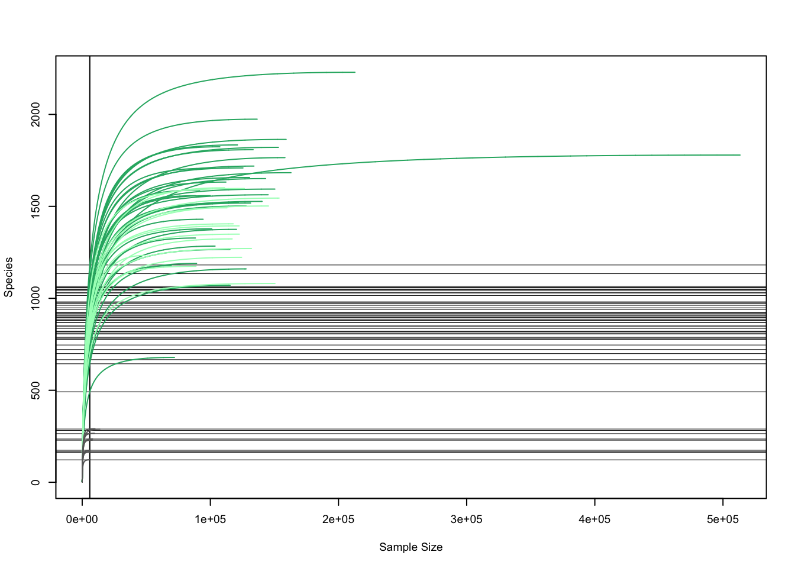
user system elapsed
18.695 0.701 20.456 # save
pdf("Figures/interior_impaired/Sample_effort.pdf")
system.time(rarecurve(mat, step = 100, sample = raremax,
col = sample_colors, label = FALSE)) user system elapsed
18.212 0.461 18.930 dev.off()quartz_off_screen
2 #slow but pretty
#library(ranacapa)
#library(ggplot2)
#effort_sampling<- ggrare(ps3, step = 100, color = "sample", label = "sampleID", se = TRUE)
#rarecurves_plot <- effort_sampling + facet_wrap(~sample)04. Explore hill distribution
Important
Following the calculation of the diversity indices and confirmation of adequate sequencing effort, an investigation was conducted on their distribution along the sampled sites and depths.
# factor to reorder plot
metadata_with_hill$Mangrove_system <- factor(metadata_with_hill$Mangrove_system, levels = c("Fossil Lagoon", "San Pedro River", "Impaired Términos Lagoon"))
metadata_with_hill$Depth <-
factor(metadata_with_hill$Depths,
levels = c("Surface", "Mid", "Deep"))
#plot
hill_barplot_explore <- metadata_with_hill %>%
pivot_longer(cols = q0:q2, names_to = "q", values_to = "value") %>%
filter(q %in% c("q0", "q1", "q2")) %>%
mutate(
qs = case_when(
q == "q0" ~ "q0=Observed",
q == "q1" ~ "q1=Exp Shannon",
q == "q2" ~ "q2=Inv Simpson")) %>%
ggbarplot(
x = "Mangrove_system",
y = "value",
add = "mean_se",
facet.by = c("qs", "Depth"),
fill = "Mangrove_system") +
scale_fill_manual(values = loc_colors) +
geom_jitter(size = 0.8,
position = position_jitter(width = 0.1)) +
facet_grid(rows = vars(qs), cols = vars(Depth),
scales = "free_y") +
theme(
strip.background = element_blank(),
strip.text.x = element_text(face= "bold", size = 13,
margin = margin(0.5, 0, 0.5, 0)),
strip.text.y = element_text(face= "bold", size = 14,
angle = 0, margin = margin(0, 0.5, 0, 0.5)),
axis.text.x = element_blank(),
axis.ticks.x = element_blank(),
axis.line = element_line(colour = "black"),
#panel.border = element_blank(),
panel.spacing.x = unit(0.5, "lines"),
panel.background = element_blank(),
axis.title.y = element_blank(),
axis.text.y = element_text(colour = "black", size = 11),
legend.position = "bottom") +
labs(
fill = "Mangrove_system",
y = "",
x = "",
title = "Biodiversity across Sites and Depths") +
theme(legend.text = element_text(size = 11))
hill_barplot_explore
ggsave("Figures/interior_impaired/Hill_diversity_across_Sites_and_Depths.pdf", hill_barplot_explore, width = 11, height = 11)
Tip
At this juncture, the available data permits only the observation of the distribution of the phenomenon under study. However, it must be noted that comparisons at this stage may prove misleading due to the presence of other variables that must be considered to accurately assess the observed differences.
05. Check alpha diversity correlation with sequencing depth
#Get effective reads
Effective_reads <- colSums(otu_table[-1, ])
metadata_with_hill$Effective_reads <- Effective_readsAlpha diversity depth correlation to order q=0
# library(ggpubr)
q0_vs_depth <- ggscatter(metadata_with_hill,
x = "Effective_reads", y = "q0",
xlab= "Sequencing depth (number of reads)",
ylab = "q=0", add = "reg.line",
add.params = list(color = "#114e9d", fill = "lightgray"),
conf.int = TRUE, # Add confidence interval
cor.coef = TRUE, # Add correlation coefficient.
cor.coeff.args = list(method = "pearson", label.x = 3, label.sep = "\n")
)+
theme(legend.title = element_blank(), legend.position = "none")Alpha diversity depth correlation to order q=1
q1_vs_depth <- ggscatter(metadata_with_hill,
x = "Effective_reads", y = "q1",
xlab= "Sequencing depth (number of reads)",
ylab = "q=1", add = "reg.line",
add.params = list(color = "#114e9d", fill = "lightgray"),
conf.int = TRUE, # Add confidence interval
cor.coef = TRUE, # Add correlation coefficient
cor.coeff.args = list(method = "pearson", label.x = 3, label.sep = "\n")) +
theme(legend.title = element_blank(),
legend.position = "none")Alpha diversity depth correlation to order q=2
q2_vs_depth <- ggscatter(metadata_with_hill,
x = "Effective_reads", y = "q2",
xlab= "Sequencing depth (number of reads)",
ylab = "q=2", add = "reg.line",
add.params = list(color = "#114e9d", fill = "lightgray"),
conf.int = TRUE, # Add confidence interval
cor.coef = TRUE, # Add correlation coefficient
cor.coeff.args = list(method = "pearson", label.x = 3, label.sep = "\n")) +
theme(legend.title = element_blank(),
legend.position = "none")# library(ggplot2)
# library(cowplot)
#Combine plot
title_corr_plot <- ggdraw() +
draw_label("Alpha diversity depth correlation")
correlation_plot_q012 <- plot_grid(title_corr_plot,
q0_vs_depth,
q1_vs_depth,
q2_vs_depth,
ncol = 1,
rel_heights = c(0.15, 1, 1, 1))
correlation_plot_q012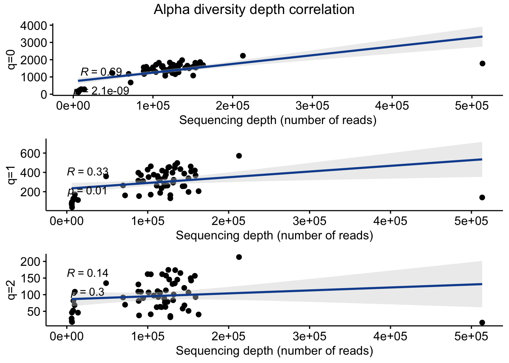
# #save plot
ggsave("Figures/interior_impaired/alpha_depth_correlation.pdf", correlation_plot_q012, width = 8, height = 8)
Take note
We found a positive correlation between Observed richness and Shannon Diversity with sequencing depth, indicating that these variables should be considered when conducting meaningful comparisons of this index.
Caution
The sequencing depth, presence of repeated measures, and imbalances in the project data necessitates model-based comparison. In this instance, the utilization of linear mixed models is a good way to evaluate effects and differences.
06. Get significant differences
Remember
The significance of the observed differences among mangrove systems was determined by employing a linear mixed model, given the imbalanced sample numbers.
# Change fossil lagoon reference
metadata_with_hill$Mangrove_system <- relevel(metadata_with_hill$Mangrove_system, ref = "Impaired Términos Lagoon")By depth
q0 Observed Richness
# lmm
q0lmer <- lmer(q0 ~ log(Effective_reads) + Depth + Mangrove_system + (1 | ID), data = metadata_with_hill)
# summary
summary(q0lmer)Linear mixed model fit by REML. t-tests use Satterthwaite's method [
lmerModLmerTest]
Formula: q0 ~ log(Effective_reads) + Depth + Mangrove_system + (1 | ID)
Data: metadata_with_hill
REML criterion at convergence: 715
Scaled residuals:
Min 1Q Median 3Q Max
-3.0082 -0.5189 -0.0006 0.5709 1.9775
Random effects:
Groups Name Variance Std.Dev.
ID (Intercept) 23199 152
Residual 21643 147
Number of obs: 59, groups: ID, 16
Fixed effects:
Estimate Std. Error df t value Pr(>|t|)
(Intercept) -2363.6 635.2 47.0 -3.72 0.00053 ***
log(Effective_reads) 278.2 70.0 45.5 3.97 0.00025 ***
DepthMid 105.1 52.0 40.1 2.02 0.05008 .
DepthDeep 135.9 47.1 40.4 2.88 0.00629 **
Mangrove_systemFossil Lagoon 392.4 229.8 48.9 1.71 0.09403 .
Mangrove_systemSan Pedro River 559.3 223.8 51.8 2.50 0.01566 *
---
Signif. codes: 0 '***' 0.001 '**' 0.01 '*' 0.05 '.' 0.1 ' ' 1
Correlation of Fixed Effects:
(Intr) lg(E_) DpthMd DpthDp Mng_FL
lg(Effctv_) -0.986
DepthMid -0.023 -0.018
DepthDeep 0.091 -0.132 0.554
Mngrv_sysFL 0.737 -0.817 0.014 0.096
Mngrv_sySPR 0.774 -0.856 0.015 0.089 0.898# Permutation test con lmerTest
perm_test <- rand(q0lmer, nsim = 1000)
perm_testANOVA-like table for random-effects: Single term deletions
Model:
q0 ~ log(Effective_reads) + Depth + Mangrove_system + (1 | ID)
npar logLik AIC LRT Df Pr(>Chisq)
<none> 8 -357 731
(1 | ID) 7 -365 744 15.4 1 8.7e-05 ***
---
Signif. codes: 0 '***' 0.001 '**' 0.01 '*' 0.05 '.' 0.1 ' ' 1#effects
anova(q0lmer)Type III Analysis of Variance Table with Satterthwaite's method
Sum Sq Mean Sq NumDF DenDF F value Pr(>F)
log(Effective_reads) 341571 341571 1 45.5 15.78 0.00025 ***
Depth 185439 92719 2 40.3 4.28 0.02056 *
Mangrove_system 167078 83539 2 20.5 3.86 0.03780 *
---
Signif. codes: 0 '***' 0.001 '**' 0.01 '*' 0.05 '.' 0.1 ' ' 1# get differences with emmeans
q0_lmer_means <- emmeans(q0lmer, pairwise ~ Depth)
# get significance letters
cld_results <- cld(object = q0_lmer_means$emmeans, Letters = letters)
# Convert to data frame
q0_emmeans_df <- as.data.frame(cld_results)
q0_emmeans_df Depth emmean SE df lower.CL upper.CL .group
Surface 1186 83.7 49.3 1018 1354 a
Mid 1291 83.1 49.1 1124 1458 ab
Deep 1322 76.5 45.2 1168 1476 b
Results are averaged over the levels of: Mangrove_system
Degrees-of-freedom method: kenward-roger
Confidence level used: 0.95
P value adjustment: tukey method for comparing a family of 3 estimates
significance level used: alpha = 0.05
NOTE: If two or more means share the same grouping symbol,
then we cannot show them to be different.
But we also did not show them to be the same. # boxplot with significance
q0plot <- ggplot(metadata_with_hill, aes(x = Depth, y = q0, fill = Depth)) +
geom_boxplot() +
geom_jitter(aes(fill = Depth), width = 0.1, alpha = 0.4) +
geom_text(data = q0_emmeans_df, aes(y = emmean, label = .group), vjust = -5, color = "black", fontface = "bold", position = position_dodge(0.9)) +
labs(title = "Observed Richness", y = NULL, x = NULL,
caption = "lmer (depth sequencing, layers, location and sediment core)") +
theme_classic() + scale_fill_manual(values = depth_colors) +
theme(legend.position = "none",
axis.text.y = element_text(size = 9),
axis.text.x = element_text(size = 9),
plot.caption = element_text(size = 7, face = "italic"))
q0plot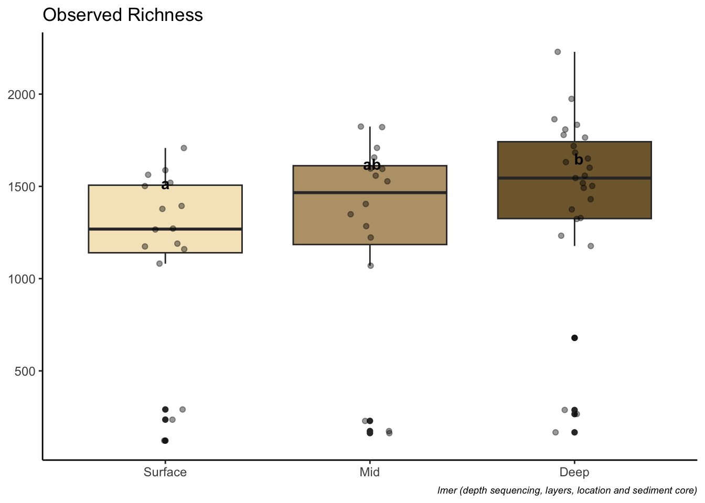
q1 Diversity Exp Shannon
# Fitted linear mixed model
q1lmer <- lmer(q1 ~ log(Effective_reads) + Depth + Mangrove_system + (1 | ID), data = metadata_with_hill)
# summary
summary(q1lmer)Linear mixed model fit by REML. t-tests use Satterthwaite's method [
lmerModLmerTest]
Formula: q1 ~ log(Effective_reads) + Depth + Mangrove_system + (1 | ID)
Data: metadata_with_hill
REML criterion at convergence: 644
Scaled residuals:
Min 1Q Median 3Q Max
-1.8856 -0.6129 0.0913 0.5692 2.3929
Random effects:
Groups Name Variance Std.Dev.
ID (Intercept) 4079 63.9
Residual 6255 79.1
Number of obs: 59, groups: ID, 16
Fixed effects:
Estimate Std. Error df t value Pr(>|t|)
(Intercept) 192.3 335.1 48.5 0.57 0.569
log(Effective_reads) -13.0 37.1 47.5 -0.35 0.727
DepthMid 55.4 28.0 40.3 1.98 0.054 .
DepthDeep 30.7 25.3 40.6 1.21 0.233
Mangrove_systemFossil Lagoon 256.5 115.8 51.2 2.22 0.031 *
Mangrove_systemSan Pedro River 263.9 114.0 52.7 2.32 0.025 *
---
Signif. codes: 0 '***' 0.001 '**' 0.01 '*' 0.05 '.' 0.1 ' ' 1
Correlation of Fixed Effects:
(Intr) lg(E_) DpthMd DpthDp Mng_FL
lg(Effctv_) -0.990
DepthMid -0.024 -0.017
DepthDeep 0.088 -0.129 0.554
Mngrv_sysFL 0.797 -0.858 0.015 0.098
Mngrv_sySPR 0.828 -0.890 0.016 0.090 0.920# lmerTest
perm_testq1 <- rand(q1lmer, nsim = 1000)
# Summary
perm_testq1ANOVA-like table for random-effects: Single term deletions
Model:
q1 ~ log(Effective_reads) + Depth + Mangrove_system + (1 | ID)
npar logLik AIC LRT Df Pr(>Chisq)
<none> 8 -322 660
(1 | ID) 7 -327 667 9.01 1 0.0027 **
---
Signif. codes: 0 '***' 0.001 '**' 0.01 '*' 0.05 '.' 0.1 ' ' 1# Efects
anova(q1lmer)Type III Analysis of Variance Table with Satterthwaite's method
Sum Sq Mean Sq NumDF DenDF F value Pr(>F)
log(Effective_reads) 771 771 1 47.5 0.12 0.727
Depth 24655 12327 2 40.5 1.97 0.152
Mangrove_system 33824 16912 2 20.6 2.70 0.091 .
---
Signif. codes: 0 '***' 0.001 '**' 0.01 '*' 0.05 '.' 0.1 ' ' 1# Sig dif emmeans
q1_lmer_means <- emmeans(q1lmer, pairwise ~ Depth)
# letters
cld_resultsq1 <- cld(object = q1_lmer_means$emmeans, Letters = letters)
# Convert df
emmeans_dfq1 <- as.data.frame(cld_resultsq1)
emmeans_dfq1 Depth emmean SE df lower.CL upper.CL .group
Surface 214 42.4 51.8 129 300 a
Deep 245 38.3 49.2 168 322 a
Mid 270 42.1 51.7 186 354 a
Results are averaged over the levels of: Mangrove_system
Degrees-of-freedom method: kenward-roger
Confidence level used: 0.95
P value adjustment: tukey method for comparing a family of 3 estimates
significance level used: alpha = 0.05
NOTE: If two or more means share the same grouping symbol,
then we cannot show them to be different.
But we also did not show them to be the same. # plot
q1plot <- ggplot(metadata_with_hill, aes(x = Depth, y = q1, fill = Depth)) +
geom_boxplot() +
geom_jitter(aes(fill = Depth), width = 0.1, alpha = 0.4) +
geom_text(data = emmeans_dfq1, aes(y = emmean, label = .group), vjust = -9, color = "black", fontface = "bold",position = position_dodge(0.9)) +
labs(title = "Exp Shannon", y = NULL, x = NULL ) + #,
#caption = "letters by lmer emmeans") +
theme_bw() + scale_fill_manual(values = depth_colors) +
theme(legend.position = "none")
q1plot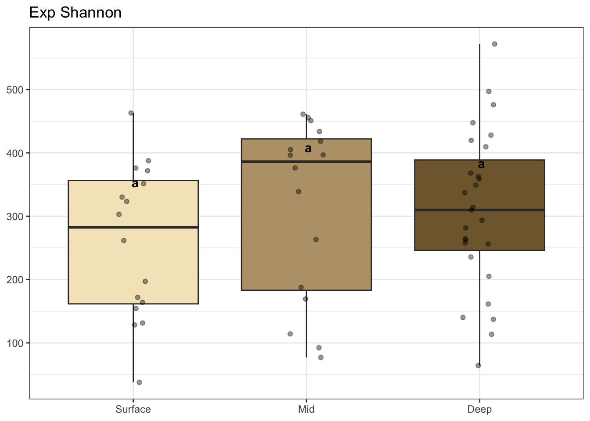
q2 Dominance Inv Simpson
# Fitted linear mixed model
q2lmer <- lmer(q2 ~ Depth + Mangrove_system + (1 | ID), data = metadata_with_hill)
#summary
summary(q2lmer)Linear mixed model fit by REML. t-tests use Satterthwaite's method [
lmerModLmerTest]
Formula: q2 ~ Depth + Mangrove_system + (1 | ID)
Data: metadata_with_hill
REML criterion at convergence: 569
Scaled residuals:
Min 1Q Median 3Q Max
-1.895 -0.647 -0.109 0.665 2.498
Random effects:
Groups Name Variance Std.Dev.
ID (Intercept) 501 22.4
Residual 1418 37.7
Number of obs: 59, groups: ID, 16
Fixed effects:
Estimate Std. Error df t value Pr(>|t|)
(Intercept) 40.68 19.49 21.38 2.09 0.049 *
DepthMid 25.30 13.31 41.28 1.90 0.064 .
DepthDeep 9.25 11.96 41.44 0.77 0.444
Mangrove_systemFossil Lagoon 50.92 23.51 15.16 2.17 0.047 *
Mangrove_systemSan Pedro River 52.38 20.55 15.28 2.55 0.022 *
---
Signif. codes: 0 '***' 0.001 '**' 0.01 '*' 0.05 '.' 0.1 ' ' 1
Correlation of Fixed Effects:
(Intr) DpthMd DpthDp Mng_FL
DepthMid -0.342
DepthDeep -0.331 0.557
Mngrv_sysFL -0.702 0.000 -0.031
Mngrv_sySPR -0.797 0.000 -0.067 0.675# lmerTest
perm_testq2 <- rand(q2lmer, nsim = 1000)
# Summary
perm_testq2ANOVA-like table for random-effects: Single term deletions
Model:
q2 ~ Depth + Mangrove_system + (1 | ID)
npar logLik AIC LRT Df Pr(>Chisq)
<none> 7 -285 583
(1 | ID) 6 -287 585 4.12 1 0.042 *
---
Signif. codes: 0 '***' 0.001 '**' 0.01 '*' 0.05 '.' 0.1 ' ' 1# Efects
anova(q2lmer)Type III Analysis of Variance Table with Satterthwaite's method
Sum Sq Mean Sq NumDF DenDF F value Pr(>F)
Depth 5289 2645 2 41.4 1.86 0.17
Mangrove_system 9734 4867 2 14.5 3.43 0.06 .
---
Signif. codes: 0 '***' 0.001 '**' 0.01 '*' 0.05 '.' 0.1 ' ' 1# Sig dif emmeans
q2_lmer_means <- emmeans(q2lmer, pairwise ~ Depth)
# letters
cld_resultsq2 <- cld(object = q2_lmer_means$emmeans, Letters = letters)
# Convert df
emmeans_dfq2 <- as.data.frame(cld_resultsq2)
emmeans_dfq2 Depth emmean SE df lower.CL upper.CL .group
Surface 75.1 11.6 38.6 51.7 98.5 a
Deep 84.4 10.3 28.1 63.3 105.4 a
Mid 100.4 11.6 38.6 77.0 123.8 a
Results are averaged over the levels of: Mangrove_system
Degrees-of-freedom method: kenward-roger
Confidence level used: 0.95
P value adjustment: tukey method for comparing a family of 3 estimates
significance level used: alpha = 0.05
NOTE: If two or more means share the same grouping symbol,
then we cannot show them to be different.
But we also did not show them to be the same. # plot
q2plot <- ggplot(metadata_with_hill, aes(x = Depth, y = q2, fill = Depth)) +
geom_boxplot() +
geom_jitter(aes(fill = Depth), width = 0.1, alpha = 0.4) +
geom_text(data = emmeans_dfq2, aes(y = emmean, label = .group), vjust = -9, color = "black", fontface = "bold",position = position_dodge(0.9)) +
labs(title = "q2 = Inv Simpson", y = NULL, x = NULL ) + #,
#caption = "letters by lmer emmeans") +
theme_bw() + scale_fill_manual(values = depth_colors) +
theme(legend.position = "none")
q2plot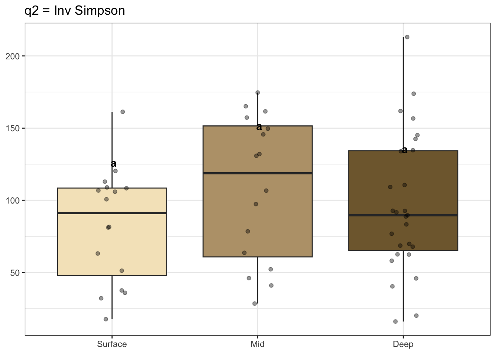
By Mangrove_system
q0 Observed Richness
# lmm
q0lmerloc <- lmer(q0 ~ log(Effective_reads) + Mangrove_system + Depth + (1 | ID), data = metadata_with_hill)
# summary
summary(q0lmerloc)Linear mixed model fit by REML. t-tests use Satterthwaite's method [
lmerModLmerTest]
Formula: q0 ~ log(Effective_reads) + Mangrove_system + Depth + (1 | ID)
Data: metadata_with_hill
REML criterion at convergence: 715
Scaled residuals:
Min 1Q Median 3Q Max
-3.0082 -0.5189 -0.0006 0.5709 1.9775
Random effects:
Groups Name Variance Std.Dev.
ID (Intercept) 23199 152
Residual 21643 147
Number of obs: 59, groups: ID, 16
Fixed effects:
Estimate Std. Error df t value Pr(>|t|)
(Intercept) -2363.6 635.2 47.0 -3.72 0.00053 ***
log(Effective_reads) 278.2 70.0 45.5 3.97 0.00025 ***
Mangrove_systemFossil Lagoon 392.4 229.8 48.9 1.71 0.09403 .
Mangrove_systemSan Pedro River 559.3 223.8 51.8 2.50 0.01566 *
DepthMid 105.1 52.0 40.1 2.02 0.05008 .
DepthDeep 135.9 47.1 40.4 2.88 0.00629 **
---
Signif. codes: 0 '***' 0.001 '**' 0.01 '*' 0.05 '.' 0.1 ' ' 1
Correlation of Fixed Effects:
(Intr) lg(E_) Mng_FL Mn_SPR DpthMd
lg(Effctv_) -0.986
Mngrv_sysFL 0.737 -0.817
Mngrv_sySPR 0.774 -0.856 0.898
DepthMid -0.023 -0.018 0.014 0.015
DepthDeep 0.091 -0.132 0.096 0.089 0.554# Permutation test
perm_testloc <- rand(q0lmerloc, nsim = 1000)
perm_testlocANOVA-like table for random-effects: Single term deletions
Model:
q0 ~ log(Effective_reads) + Mangrove_system + Depth + (1 | ID)
npar logLik AIC LRT Df Pr(>Chisq)
<none> 8 -357 731
(1 | ID) 7 -365 744 15.4 1 8.7e-05 ***
---
Signif. codes: 0 '***' 0.001 '**' 0.01 '*' 0.05 '.' 0.1 ' ' 1#effects
anova(q0lmerloc)Type III Analysis of Variance Table with Satterthwaite's method
Sum Sq Mean Sq NumDF DenDF F value Pr(>F)
log(Effective_reads) 341571 341571 1 45.5 15.78 0.00025 ***
Mangrove_system 167078 83539 2 20.5 3.86 0.03780 *
Depth 185439 92719 2 40.3 4.28 0.02056 *
---
Signif. codes: 0 '***' 0.001 '**' 0.01 '*' 0.05 '.' 0.1 ' ' 1# emmeans
q0_lmer_means_loc <- emmeans(q0lmerloc, pairwise ~ Mangrove_system)
# significance letters
q0cld_results_loc <- cld(object = q0_lmer_means_loc$emmeans, Letters = letters)
# Convert to data frame
q0emmeans_df_loc <- as.data.frame(q0cld_results_loc)
q0emmeans_df_loc Mangrove_system emmean SE df lower.CL upper.CL .group
Impaired Términos Lagoon 949 212.5 52.8 523 1375 a
Fossil Lagoon 1341 86.0 13.3 1156 1527 ab
San Pedro River 1508 57.2 13.1 1385 1632 b
Results are averaged over the levels of: Depth
Degrees-of-freedom method: kenward-roger
Confidence level used: 0.95
P value adjustment: tukey method for comparing a family of 3 estimates
significance level used: alpha = 0.05
NOTE: If two or more means share the same grouping symbol,
then we cannot show them to be different.
But we also did not show them to be the same. # boxplot with significance
q0plotloc <- ggplot(metadata_with_hill, aes(x = Mangrove_system, y = q0, fill = Mangrove_system)) +
geom_boxplot() +
geom_jitter(aes(fill = Mangrove_system), width = 0.1, alpha = 0.4) +
geom_text(data = q0emmeans_df_loc, aes(y = emmean, label = .group), vjust = -3, color = "black", fontface = "bold", position = position_dodge(0.9)) +
labs(title = "Observed Richness", y = NULL, x = NULL ) + #,
#caption = "letters by lmer emmeans") +
theme_classic() + scale_fill_manual(values = loc_colors) +
theme(legend.position = "none", axis.text.x = element_blank())
q0plotloc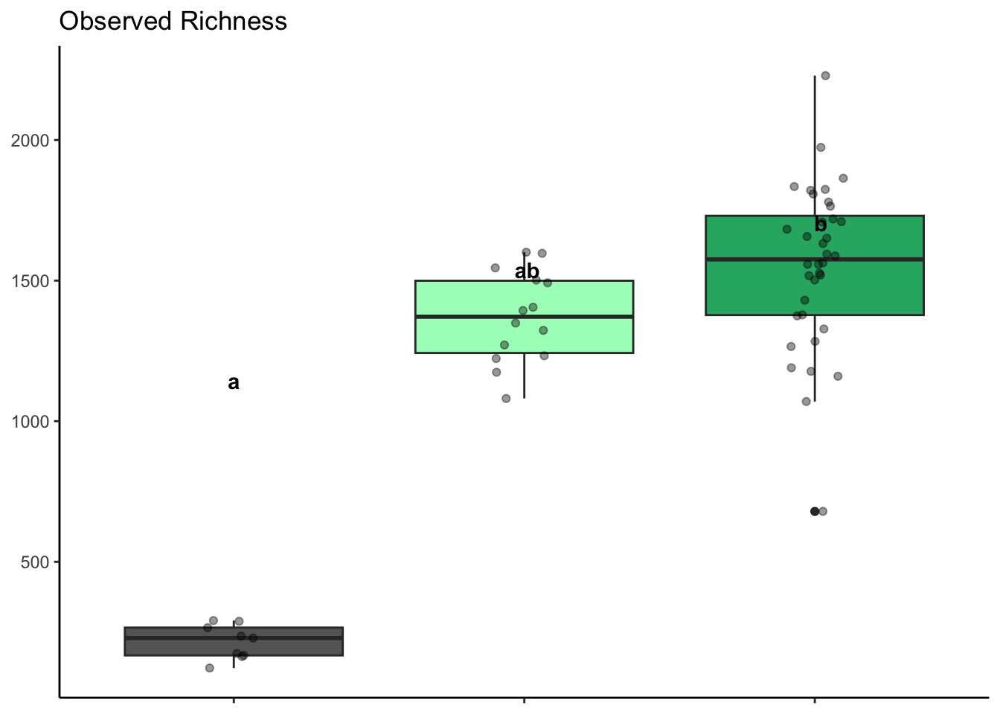
q1 Exp Shannon diversity
# lmm
q1lmerloc <- lmer(q1 ~ Mangrove_system + Depth + (1 | ID), data = metadata_with_hill)
# summary
summary(q1lmerloc)Linear mixed model fit by REML. t-tests use Satterthwaite's method [
lmerModLmerTest]
Formula: q1 ~ Mangrove_system + Depth + (1 | ID)
Data: metadata_with_hill
REML criterion at convergence: 654
Scaled residuals:
Min 1Q Median 3Q Max
-2.0370 -0.5967 0.0425 0.5745 2.3482
Random effects:
Groups Name Variance Std.Dev.
ID (Intercept) 3942 62.8
Residual 6176 78.6
Number of obs: 59, groups: ID, 16
Fixed effects:
Estimate Std. Error df t value Pr(>|t|)
(Intercept) 75.8 47.3 18.9 1.60 0.12584
Mangrove_systemFossil Lagoon 221.6 58.6 14.7 3.78 0.00187 **
Mangrove_systemSan Pedro River 228.2 51.2 14.8 4.46 0.00048 ***
DepthMid 55.2 27.8 41.4 1.99 0.05350 .
DepthDeep 29.5 25.0 41.5 1.18 0.24360
---
Signif. codes: 0 '***' 0.001 '**' 0.01 '*' 0.05 '.' 0.1 ' ' 1
Correlation of Fixed Effects:
(Intr) Mng_FL Mn_SPR DpthMd
Mngrv_sysFL -0.716
Mngrv_sySPR -0.815 0.668
DepthMid -0.293 0.000 0.000
DepthDeep -0.285 -0.026 -0.056 0.557# Permutation test
perm_testlocq1 <- rand(q1lmerloc, nsim = 1000)
perm_testlocq1ANOVA-like table for random-effects: Single term deletions
Model:
q1 ~ Mangrove_system + Depth + (1 | ID)
npar logLik AIC LRT Df Pr(>Chisq)
<none> 7 -327 668
(1 | ID) 6 -331 675 9.29 1 0.0023 **
---
Signif. codes: 0 '***' 0.001 '**' 0.01 '*' 0.05 '.' 0.1 ' ' 1#effects
anova(q1lmerloc)Type III Analysis of Variance Table with Satterthwaite's method
Sum Sq Mean Sq NumDF DenDF F value Pr(>F)
Mangrove_system 129877 64939 2 14.2 10.52 0.0016 **
Depth 24448 12224 2 41.5 1.98 0.1510
---
Signif. codes: 0 '***' 0.001 '**' 0.01 '*' 0.05 '.' 0.1 ' ' 1# Differences emmeans
q1lmer_means_loc <- emmeans(q1lmerloc, pairwise ~ Mangrove_system)
# significance letters
q1cld_results_loc <- cld(object = q1lmer_means_loc$emmeans, Letters = letters)
# Convert to data frame
q1emmeans_df_loc <- as.data.frame(q1cld_results_loc)
q1emmeans_df_loc Mangrove_system emmean SE df lower.CL upper.CL .group
Impaired Términos Lagoon 104 44.7 14.8 8.6 199 a
Fossil Lagoon 326 37.9 13.6 244.1 407 b
San Pedro River 332 24.9 12.9 278.4 386 b
Results are averaged over the levels of: Depth
Degrees-of-freedom method: kenward-roger
Confidence level used: 0.95
P value adjustment: tukey method for comparing a family of 3 estimates
significance level used: alpha = 0.05
NOTE: If two or more means share the same grouping symbol,
then we cannot show them to be different.
But we also did not show them to be the same. # boxplot with significance
q1plotloc <- ggplot(metadata_with_hill, aes(x = Mangrove_system, y = q1, fill = Mangrove_system)) +
geom_boxplot() +
geom_jitter(aes(fill = Mangrove_system), width = 0.1, alpha = 0.4) +
geom_text(data = q1emmeans_df_loc, aes(y = emmean, label = .group), vjust = -3, color = "black", fontface = "bold", position = position_dodge(0.9)) +
labs(title = "Exp Shannon", y = NULL, x = NULL,
caption = "lmer (Depth sequencing, Mangrove system, layers and sediment core)") +
theme_classic() + scale_fill_manual(values = loc_colors) +
theme(legend.position = "none",
axis.text.y = element_text(size = 9),
axis.text.x = element_text(size = 9),
plot.caption = element_text(size = 7, face = "italic"))
q1plotloc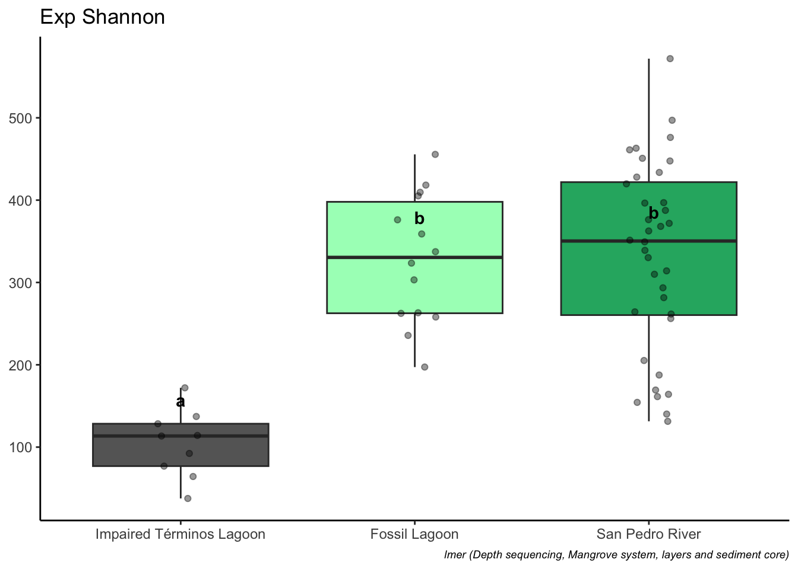
q2 Dominance Inv Simpson
# lmm
q2lmerloc <- lmer(q2 ~ Mangrove_system + Depth + (1 | ID), data = metadata_with_hill)
# summary
summary(q2lmerloc)Linear mixed model fit by REML. t-tests use Satterthwaite's method [
lmerModLmerTest]
Formula: q2 ~ Mangrove_system + Depth + (1 | ID)
Data: metadata_with_hill
REML criterion at convergence: 569
Scaled residuals:
Min 1Q Median 3Q Max
-1.895 -0.647 -0.109 0.665 2.498
Random effects:
Groups Name Variance Std.Dev.
ID (Intercept) 501 22.4
Residual 1418 37.7
Number of obs: 59, groups: ID, 16
Fixed effects:
Estimate Std. Error df t value Pr(>|t|)
(Intercept) 40.68 19.49 21.38 2.09 0.049 *
Mangrove_systemFossil Lagoon 50.92 23.51 15.16 2.17 0.047 *
Mangrove_systemSan Pedro River 52.38 20.55 15.28 2.55 0.022 *
DepthMid 25.30 13.31 41.28 1.90 0.064 .
DepthDeep 9.25 11.96 41.44 0.77 0.444
---
Signif. codes: 0 '***' 0.001 '**' 0.01 '*' 0.05 '.' 0.1 ' ' 1
Correlation of Fixed Effects:
(Intr) Mng_FL Mn_SPR DpthMd
Mngrv_sysFL -0.702
Mngrv_sySPR -0.797 0.675
DepthMid -0.342 0.000 0.000
DepthDeep -0.331 -0.031 -0.067 0.557# Permutation test
perm_testlocq2 <- rand(q2lmerloc, nsim = 1000)
perm_testlocq2ANOVA-like table for random-effects: Single term deletions
Model:
q2 ~ Mangrove_system + Depth + (1 | ID)
npar logLik AIC LRT Df Pr(>Chisq)
<none> 7 -285 583
(1 | ID) 6 -287 585 4.12 1 0.042 *
---
Signif. codes: 0 '***' 0.001 '**' 0.01 '*' 0.05 '.' 0.1 ' ' 1#effects
anova(q2lmerloc)Type III Analysis of Variance Table with Satterthwaite's method
Sum Sq Mean Sq NumDF DenDF F value Pr(>F)
Mangrove_system 9734 4867 2 14.5 3.43 0.06 .
Depth 5289 2645 2 41.4 1.86 0.17
---
Signif. codes: 0 '***' 0.001 '**' 0.01 '*' 0.05 '.' 0.1 ' ' 1# Differences emmeans
q2lmer_means_loc <- emmeans(q2lmerloc, pairwise ~ Mangrove_system)
# Significance
q2cld_results_loc <- cld(object = q2lmer_means_loc$emmeans, Letters = letters)
# Convertir a data frame
q2emmeans_df_loc <- as.data.frame(q2cld_results_loc)
q2emmeans_df_loc Mangrove_system emmean SE df lower.CL upper.CL .group
Impaired Términos Lagoon 52.2 18.01 15.7 14.0 90.4 a
Fossil Lagoon 103.1 15.12 13.8 70.6 135.6 a
San Pedro River 104.6 9.89 12.9 83.2 126.0 a
Results are averaged over the levels of: Depth
Degrees-of-freedom method: kenward-roger
Confidence level used: 0.95
P value adjustment: tukey method for comparing a family of 3 estimates
significance level used: alpha = 0.05
NOTE: If two or more means share the same grouping symbol,
then we cannot show them to be different.
But we also did not show them to be the same. # boxplot with significance
q2plotloc <- ggplot(metadata_with_hill, aes(x = Mangrove_system, y = q2, fill = Mangrove_system)) +
geom_boxplot() +
geom_jitter(aes(fill = Mangrove_system), width = 0.1, alpha = 0.4) +
geom_text(data = q2emmeans_df_loc, aes(y = emmean, label = .group), vjust = -3, color = "black", fontface = "bold", position = position_dodge(0.9)) +
labs(title = "Inv Simpson", y = NULL, x = NULL ) + #,
#caption = "letters by lmer emmeans") +
theme_classic() + scale_fill_manual(values = loc_colors) +
theme(legend.position = "none")
q2plotloc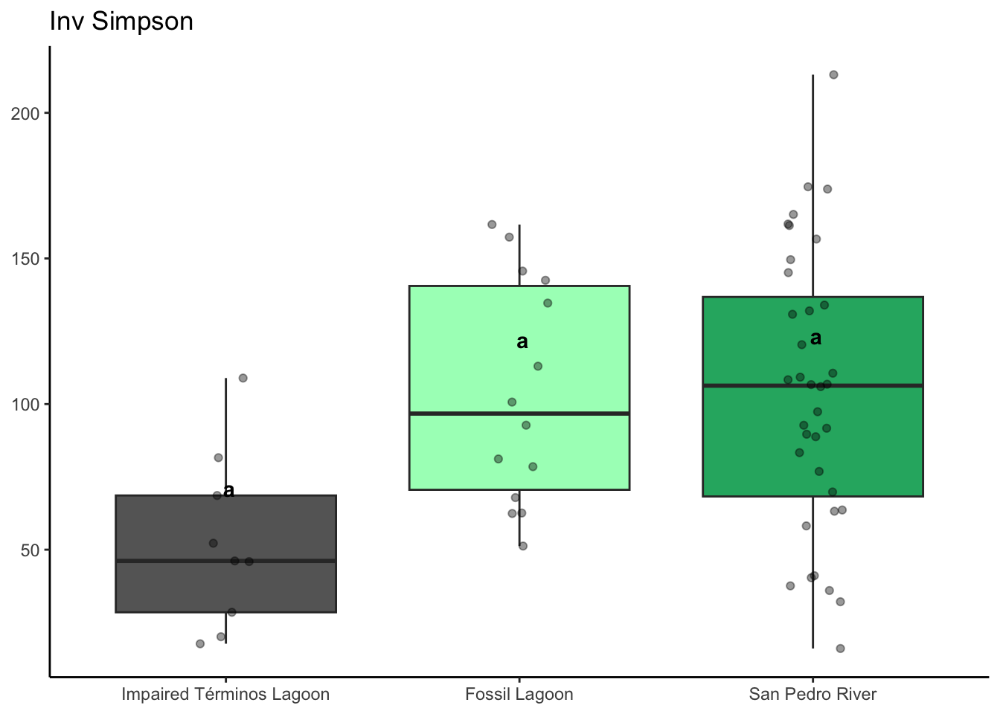
Combine plots
Take note
A combined plot of the Observed richness by depth and Mangrove system, and Shannon diversity by Mangrove system was created because the former indices showed significant differences
#Combine plot
title <- ggdraw() + draw_label("Effective number of ASVs", angle = 90, size = 12)
alphaplots_loc <- plot_grid(q0plotloc, q1plotloc,
ncol = 1)
alphaplots_loc <- plot_grid(title, alphaplots_loc, ncol = 2, rel_widths = c(0.05, 1))
alphaplots_loc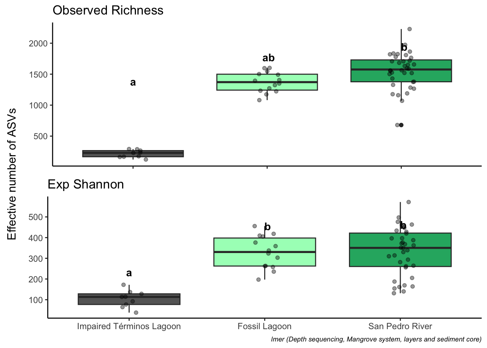
alphaplots_depth <- plot_grid(title, q0plot, ncol = 2, rel_widths = c(0.05, 1))
alphaplots_depth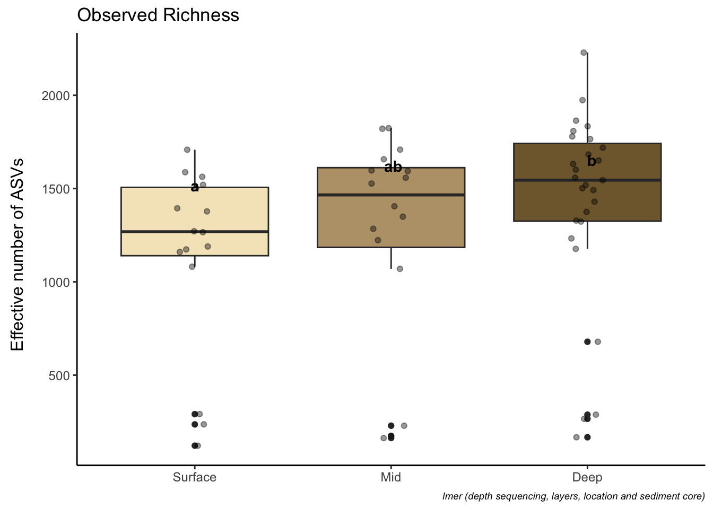
Important
A comparison of alpha diversity indices revealed no significant differences among the mangrove sites. Consequently, incorporation of these into the final plot was unnecessary.
Save rds plots
saveRDS(alphaplots_depth, "rds/interior_impaired/alpha_diversity_depth_plot.rds")
saveRDS(alphaplots_loc, "rds/interior_impaired/alpha_diversity_loc_plot.rds")Supplementary
Get depth differences by system
q0
# factor
metadata_with_hill$Depths <- factor(metadata_with_hill$Depths, levels = c("Surface", "Mid", "Deep"))
#plot q0
q0_depth_system <- ggplot(metadata_with_hill, aes(x = Depths, y = q0, fill = Depths)) +
geom_boxplot(outlier.shape = NA, alpha = 0.9) +
geom_jitter(width = 0.2, alpha = 0.5) +
facet_wrap(~Mangrove_system, scales = "free_y") +
geom_smooth(aes(group = 1), method = "lm", se = FALSE, color = "black", linetype = "dashed") +
theme_classic() +
scale_fill_manual(values = depth_colors) +
labs(title = NULL,
x = NULL, y = "Observed Richness (q0)") +
theme(legend.position = "none")q1
#plot
q1_depth_system <- ggplot(metadata_with_hill, aes(x = Depths, y = q1, fill = Depths)) +
geom_boxplot(outlier.shape = NA, alpha = 0.9) +
geom_jitter(width = 0.2, alpha = 0.5) +
facet_wrap(~Mangrove_system, scales = "free_y") +
geom_smooth(aes(group = 1), method = "lm", se = FALSE, color = "black", linetype = "dashed") +
theme_classic() +
scale_fill_manual(values = depth_colors) +
labs(title = NULL,
x = NULL, y = "Exp Shannon Diversity (q1)") +
theme(legend.position = "none")q2
q2_depth_system <- ggplot(metadata_with_hill, aes(x = Depths, y = q2, fill = Depths)) +
geom_boxplot(outlier.shape = NA, alpha = 0.9) +
geom_jitter(width = 0.2, alpha = 0.5) +
facet_wrap(~Mangrove_system, scales = "free_y") +
geom_smooth(aes(group = 1), method = "lm", se = FALSE, color = "black", linetype = "dashed") +
theme_classic() +
scale_fill_manual(values = depth_colors) +
labs(title = NULL,
x = "Sediment Depth", y = "Inv Simpson Dominance (q2)") +
theme(legend.position = "none")#Combine alpha diversity plots
q012_depth_system_plot <- plot_grid(q0_depth_system,
q1_depth_system,
q2_depth_system,
ncol = 1)
# show
q012_depth_system_plot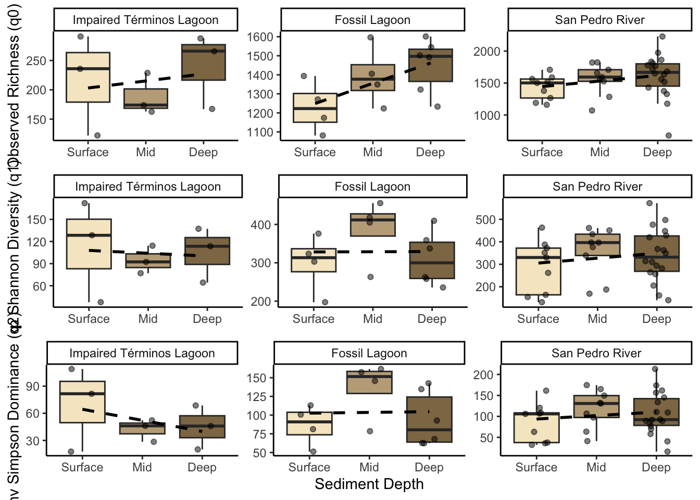
# svae rds
saveRDS(q012_depth_system_plot, "rds/interior_impaired/alpha_diversity_Depths_by_system_plot.rds")
# save
ggsave("Figures/interior_impaired/Supplementary_alphadiv_per_Depths_and_system.pdf",
q012_depth_system_plot, width = 6.3, height = 9.9)Tables
library(dplyr)
library(broom.mixed)
library(emmeans)
# Linear Mixed Models
tableS7_imp_models <- bind_rows(
tidy(q0lmerloc) %>% mutate(Metric = "q0"),
tidy(q1lmerloc) %>% mutate(Metric = "q1"),
tidy(q2lmerloc) %>% mutate(Metric = "q2"),
) %>%
filter(effect == "fixed") %>%
dplyr::select(Metric, Term = term, Estimate = estimate, Std.Error = std.error, Statistic = statistic, p_value = p.value) %>%
mutate(across(where(is.numeric), ~ round(., 4)))
#Posthoc
# join CLD dataframe
tableS7_imp_posthoc <- bind_rows(
as.data.frame(q0cld_results_loc) %>% mutate(Metric = "q0"),
as.data.frame(q1cld_results_loc) %>% mutate(Metric = "q1"),
as.data.frame(cld_results) %>% mutate(Metric = "q0")) %>%
dplyr::select(Metric, Mangrove_system, Depth, emmean, SE, lower.CL, upper.CL, Significance = .group) %>%
mutate(across(where(is.numeric), ~ round(., 3)))
# clean
rownames(tableS7_imp_posthoc) <- NULL
#show
tableS7_imp_posthoc Metric Mangrove_system Depth emmean SE lower.CL upper.CL
1 q0 Impaired Términos Lagoon <NA> 949 212.5 522.74 1375
2 q0 Fossil Lagoon <NA> 1341 86.0 1156.08 1527
3 q0 San Pedro River <NA> 1508 57.2 1384.96 1632
4 q1 Impaired Términos Lagoon <NA> 104 44.7 8.65 199
5 q1 Fossil Lagoon <NA> 326 37.9 244.14 407
6 q1 San Pedro River <NA> 332 24.9 278.40 386
7 q0 <NA> Surface 1186 83.7 1017.70 1354
8 q0 <NA> Mid 1291 83.1 1124.13 1458
9 q0 <NA> Deep 1322 76.5 1167.88 1476
Significance
1 a
2 ab
3 b
4 a
5 b
6 b
7 a
8 ab
9 b# save
write.csv(tableS7_imp_models, "Tables/interior_impaired/Supplementary_Table_S7_Impairment_LMM.csv", row.names = FALSE)
write.csv(tableS7_imp_posthoc, "Tables/interior_impaired/Supplementary_Table_S7_Impairment_PostHoc.csv", row.names = FALSE)Alpha Diversity – Microbial Diversity from a Fossil Lagoon and comparative Interior vs Coastal Mangroves Alpha Diversity – Microbial Diversity from a Fossil Lagoon and comparative Interior vs Coastal Mangroves Alpha Diversity – Microbial Diversity from a Fossil Lagoon and comparative Interior vs Coastal Mangroves Microbial Diversity from a Fossil Lagoon and comparative Interior vs Coastal Mangroves Website of microbial diversity analysis of paper: tal tal tal Website of microbial diversity analysis of paper: tal tal tal